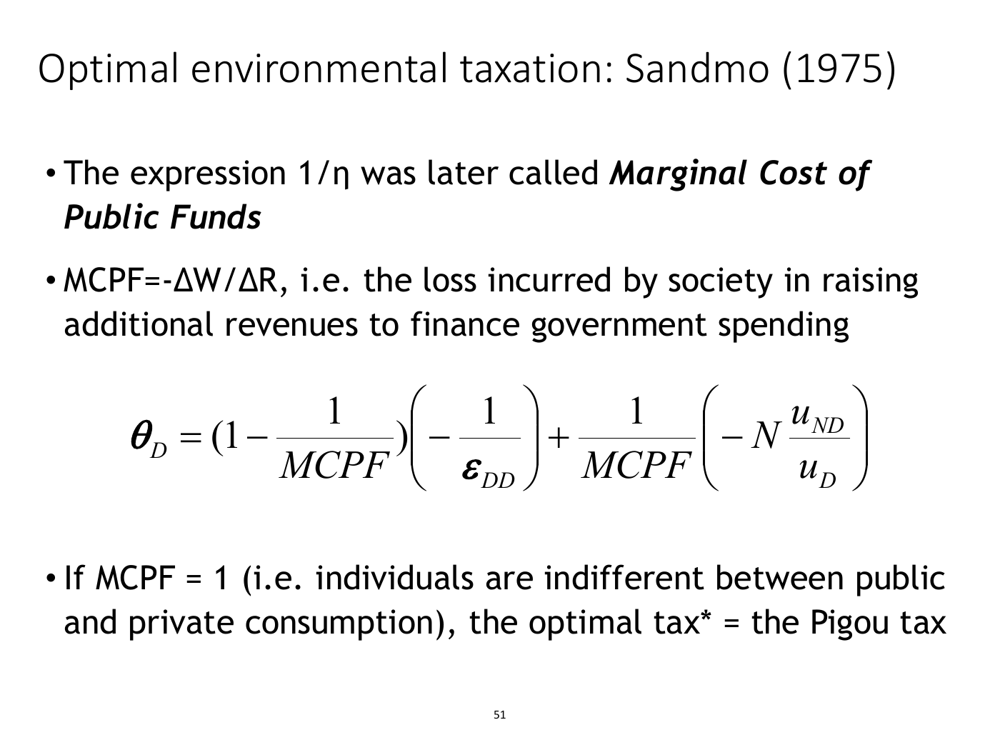
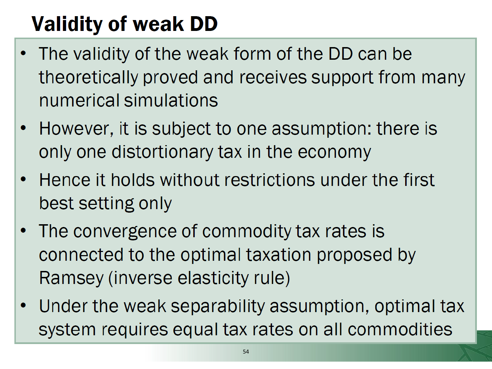

Separate corrective taxation, revenue use and double-dividend claims
Explanation, worked examples and practice
Useful first: Derive private and social activity optima and marginal corrective signals
Outcome and conditions
Three goals of an environmental tax Sandmo decomposition and the cost of public funds Revenue recycling and the double dividend The final slide's qualifications What can be applied and what needs further source material
Study conditions, assessment scope and sources
Explain the supported symbolic tax decomposition and distinguish revenue-use comparisons from an additional overall economic gain. Required components: symbolic_weights_and_tax_goals, recycling_vs_interaction_comparisons, model_and_notation_boundaries. Supported work may use the cited notes; independent checks use no notes, internet, solution or hints. A basic calculator and blank paper are allowed; reasoning, formula selection and assumptions must be supplied by the learner. Numerical examples below are agent-created hypothetical instantiations unless explicitly labelled as a finished-note example. They do not assert current market or policy facts.
Prerequisites and checks
Check the prerequisites
O011-P1 / item_version 1: O006 is needed because marginal correction is distinct from total damage/revenue. Prompt: Does collecting tax revenue automatically add the same amount to social welfare? Key: No; the payer/government transfer cancels; behavioural/environmental and resource-distortion effects need separate accounting. Pass requires the keyed mechanism and qualification; partial means an omitted step; fail means a conflicting mechanism. Adequate committed evidence under a compatible criterion permits skipping this diagnostic. Otherwise repair through Outcome and conditions before continuing.
Motivation and explanation
A first-best marginal correction uses external cost at the optimum. Government also needs revenue and existing distortionary taxes change behaviour. The displayed dirty-commodity expression combines Ramsey \(R\) and Pigou \(P\) with \(\eta=1/\mathrm{MCPF}\). Substitution gives weights \((1-1/\mathrm{MCPF})\) and \(1/\mathrm{MCPF}\); \(\mathrm{MCPF}=1\) yields \(P\). That supported algebra does not define the missing expanded utility symbols or tax base. Ramsey’s inverse-elasticity statement is a conditional simplified revenue rule, not a universal tax recommendation. Revenue is a transfer, while excess burden is the additional distortion. Lump-sum independence removes substitution incentives but not every income effect. The commodity formula excludes labour tax; later labour discussion separates environmental gain, revenue recycling and interaction loss. Weak dividend compares recycling versus lump-sum use of the same environmental revenue. Strong dividend claims an additional overall nonenvironmental efficiency improvement and depends on initial distortions/substitution/mobility etc. A toy accounting can illustrate the distinction, never establish a calibrated model or prove the final terse separability qualifications.
Read the full explanation
Reading context
Deliver these complete reused passages before the worked example; earlier concise prompts are checkpoints, not substitutes. Necessary prerequisites use the complete prepared lessons specified above.
Source passage
Origin: reused complete checked passage Three goals of an environmental tax; fingerprint 8da1915b95877f0ba4297c03056ee3110e77fd0d03c58aa602d424cb8c391b1b. Heading depth alone is adapted.
Three goals of an environmental tax
The lecture separates getting prices right, changing behaviour and raising funds for public goods. Corrective pricing in the simple model uses the marginal external cost at the optimum, rather than total historical damage. Behavioural incentives can induce resource saving and lower emissions. Revenue is an additional consequence whose use matters: the same gross collection can finance spending, be returned as a lump sum or reduce another tax. Revenue is a transfer to government, not automatically an extra social benefit equal to the cash amount. The last distinction is explanatory synthesis consistent with the source's separate recycling and interaction effects. Lecture, physical PDF pp. 49,52
For a given revenue requirement, optimal-tax theory seeks to minimize excess burden: the welfare loss caused by tax-induced distortions beyond the revenue transferred. The source contrasts a first-best lump-sum tax with second-best commodity taxation, where uniform rates are rarely optimal in the general setting. A lump-sum tax is independent of the taxed agent's behaviour and induces no substitution effect, but may still have an income effect. Lecture, physical PDF p. 49 Verhoef Externalities, physical PDF p. 9 note3
The lecture's Ramsey inverse-elasticity rule associates larger rates with less elastic demand: when quantity responds less strongly, a rate can raise revenue with less distortion on that margin. This is the source's simplified rule, not a general prescription ignoring cross-price responses, distribution or other constraints. The lecture does not derive its full demand-system assumptions. Lecture, physical PDF p. 49
Source passage
Origin: reused complete checked passage Sandmo decomposition and the cost of public funds; fingerprint 8da1915b95877f0ba4297c03056ee3110e77fd0d03c58aa602d424cb8c391b1b. Heading depth alone is adapted.
Sandmo decomposition and the cost of public funds
In the lecture's Sandmo (1975) commodity-tax setting, clean goods follow a Ramsey component and the dirty-good tax combines Ramsey and Pigouvian components. The source explicitly excludes labour taxation from this displayed commodity-tax model. It writes
Here \(\theta_D\) is its optimal dirty-commodity tax expression, \(R\) denotes the Ramsey component and \(P\) the Pigouvian component. The weight \(\eta=\lambda/\mu\) compares the marginal utility of income (\(\lambda\)) with the effect of a larger revenue requirement on social utility (\(\mu\)), as defined on the slide. \(R\) is unfortunately also used elsewhere for revenue requirement; the context is needed to distinguish the meanings. This expression says the tax combines revenue and correction considerations, with a model-dependent weight. It is not enough to compute a numerical rate without their values and a fully specified tax base. Lecture, physical PDF p. 50
The next slide introduces the marginal cost of public funds, \(MCPF=1/\eta\), and writes \(MCPF=-\Delta W/\Delta R\) for social welfare lost in raising an additional revenue amount. In that ratio \(\Delta R\) means additional public revenue, not the Ramsey component. Substituting \(\eta=1/MCPF\) gives
The displayed slide then expands its components as

Lecture PDF p. 51. The formula has been checked visually: the Pigou term is \(-N u_{ND}/u_D\), with \(ND\) as a subscript on \(u\) and \(D\) as a subscript in the denominator. Lecture, physical PDF p. 51
The connection to the preceding inverse-elasticity slide identifies the first bracket as the Ramsey part. However, the lecture does not define \(N\), \(u_{ND}\) or \(u_D\), state the utility function from which they come, or specify whether \(\theta_D\) is a normalized/ad valorem or per-unit measure. It also does not provide a derivation of the full expansion. These symbols are retained rather than assigned guessed meanings. Only the weighted decomposition and its conditional algebraic case are self-contained from the supplied material. Lecture, physical PDF pp. 49–51
If \(MCPF=1\), the Ramsey weight becomes zero and the Pigouvian weight one, so \(\theta_D=P\). The source describes this as indifference between public and private consumption. For any other value the weighting differs; the source does not supply empirical MCPF values or prove their sign/range. The decomposition should therefore not be treated as a universally calibrated environmental-tax rule. Lecture, physical PDF p. 51
Source passage
Origin: reused complete checked passage Revenue recycling and the double dividend; fingerprint 8da1915b95877f0ba4297c03056ee3110e77fd0d03c58aa602d424cb8c391b1b. Heading depth alone is adapted.
Revenue recycling and the double dividend
The first or green dividend is an environmental improvement. A proposed second or blue dividend is higher employment or economic efficiency. Three effects must be separated. The primary welfare gain is the environmental improvement correcting the pollution market. The revenue-recycling effect can reduce distortions if proceeds cut existing distortionary taxes. The tax-interaction effect can increase distortions elsewhere: higher pollution-inclusive prices reduce real wages and can lower labour supply, depending on how leisure and dirty goods substitute or complement each other. Reduced labour-tax receipts and falling environmental-tax receipts as avoidance improves can also require other revenue sources. The labour-supply discussion here extends beyond the commodity-only model used for the Sandmo display; its effects cannot simply be inferred from that formula alone. Lecture, physical PDF pp. 52–53
Weak double dividend compares two uses of a given environmental-tax revenue: reducing distortionary taxes versus returning a lump sum. The lecture says recycling through distortionary-tax cuts generally improves efficiency relative to the lump-sum option. This comparison does not itself say the entire reform raises nonenvironmental welfare relative to no environmental tax. Strong double dividend makes that larger claim: overall economic efficiency rises in addition to the environmental gain. The lecture says theory is inconclusive and lists initial tax structure, substitutability, factor mobility and rigid wages as determinants. A revenue-recycling gain can coexist with a larger tax-interaction loss. Lecture, physical PDF p. 53
The final slide's qualifications

Lecture p. 54 is image-based and adds qualifications absent from native text extraction. Lecture, physical PDF p. 54
The slide says the weak form has theoretical and simulation support but conditions its claim on there being only one distortionary tax. It then says it holds without restrictions under a first-best setting only, relates tax convergence to Ramsey's inverse-elasticity argument and states that weak separability requires equal commodity-tax rates. These terse claims are not accompanied by a model, a definition of the separability relation, or a derivation. They coexist with p. 49's general statement that uniform commodity taxes are rarely optimal. Read the equal-rate claim as a differently conditioned source statement; the supplied slides do not permit a complete theorem reconciling all of these assertions or a universal weak-double-dividend guarantee. Lecture, physical PDF pp. 49,53–54
Source passage
Origin: reused complete checked passage What can be applied and what needs further source material; fingerprint 8da1915b95877f0ba4297c03056ee3110e77fd0d03c58aa602d424cb8c391b1b. Heading depth alone is adapted.
What can be applied and what needs further source material
The supplied material supports distinguishing marginal correction from revenue raising, explaining the weighted Ramsey/Pigou expression, evaluating its \(MCPF=1\) algebraic case and separating weak/strong double dividend from tax interaction. Numerical application of the expanded Sandmo formula and a proof of the p. 54 conditions require defined tax normalization, missing utility notation and full model assumptions. Those strands remain source gaps, while the mechanism and conditional comparisons above are usable. Lecture, physical PDF pp. 49–54
Worked example
O011-W1 / item_version 1, worked_example. Prompt: Symbolic lecture decomposition \(\theta_D=(1-\eta)R+\eta P\), \(\eta=1/\mathrm{MCPF}\). Hypothetically declared \(\mathrm{MCPF}=1\) (no empirical calibration): derive the symbolic weights and the special \(\mathrm{MCPF}=1\) case, identify each component and revenue-name ambiguity, and explain the three tax goals, excess burden and lump-sum income/substitution distinction. Separate the commodity model from labour-interaction reasoning. For a labelled hypothetical reform, environmental welfare \(\text{gain}=12\), recycling nonenvironmental \(\text{gain}=4\), tax-interaction \(\text{loss}=6\); a lump-sum return of the same revenue has zero recycling gain with the same interaction loss. Apply weak versus strong double-dividend comparisons and total versus nonenvironmental changes without counting revenue twice. A claim confuses environmental gain with an extra efficiency gain. State what missing symbols/base/assumptions prevent numerical expanded Sandmo application or a universal final-slide theorem.
Steps and interpretation: \(\eta=1/1\), Ramsey weight \(1-1/1=0.000000\), Pigou weight \(1/1=1.000000\); \(\theta_D\) remains that symbolic combination of \(R\) and \(P\), not a calibrated tax rate/base. If \(\mathrm{MCPF}=1\), Ramsey weight \(0\) and Pigou weight \(1\) so \(\theta_D=P\). \(R\) denotes Ramsey component here but elsewhere revenue requirement; \(\mathrm{MCPF}\) welfare-loss/additional-revenue ratio uses revenue \(R\). Goals correct marginal prices, change behaviour and raise revenue for public goods; revenue transfer is not extra welfare equal to collection. Excess burden is distortion beyond transfer; a behaviour-independent lump-sum tax has no substitution effect but may have income effect. Simplified inverse-elasticity rule is conditional, not universal demand/distribution prescription. Sandmo displayed commodity model excludes labour taxation; labour real-wage/supply tax-interaction mechanism is additional discussion. Recycling comparison: reform nonenvironmental \(4-6=-2\); lump-sum \(-6\); recycling improves relative efficiency by \(4\), a weak comparison of the same revenue. Strong extra nonenvironmental gain holds in this declared arithmetic only if \(-2>0\): no. Total including environmental \(\text{gain}=12+4-6=10\); a positive total does not itself establish strong dividend. The toy accounting is not an empirical result or general equilibrium proof. \(N,u_{ND},u_D\), utility model and tax normalization/base are undeclared in expansion; no guessed meaning/rate. Final separability/one-distortionary-tax qualifications lack full model/proof, so no universal weak/strong guarantee.
Supported completion
Write your reasoning, then reveal the complete key to check each step.
A local draft for your own study.
Reveal explanation
Key: \(\eta=1/2\), Ramsey weight \(1-1/2=0.500000\), Pigou weight \(1/2=0.500000\); \(\theta_D\) remains that symbolic combination of \(R\) and \(P\), not a calibrated tax rate/base. If \(\mathrm{MCPF}=1\), Ramsey weight \(0\) and Pigou weight \(1\) so \(\theta_D=P\). \(R\) denotes Ramsey component here but elsewhere revenue requirement; \(\mathrm{MCPF}\) welfare-loss/additional-revenue ratio uses revenue \(R\). Goals correct marginal prices, change behaviour and raise revenue for public goods; revenue transfer is not extra welfare equal to collection. Excess burden is distortion beyond transfer; a behaviour-independent lump-sum tax has no substitution effect but may have income effect. Simplified inverse-elasticity rule is conditional, not universal demand/distribution prescription. Sandmo displayed commodity model excludes labour taxation; labour real-wage/supply tax-interaction mechanism is additional discussion. Recycling comparison: reform nonenvironmental \(5-3=2\); lump-sum \(-3\); recycling improves relative efficiency by \(5\), a weak comparison of the same revenue. Strong extra nonenvironmental gain holds in this declared arithmetic only if \(2>0\): yes. Total including environmental \(\text{gain}=15+5-3=17\); a positive total does not itself establish strong dividend. The toy accounting is not an empirical result or general equilibrium proof. \(N,u_{ND},u_D\), utility model and tax normalization/base are undeclared in expansion; no guessed meaning/rate. Final separability/one-distortionary-tax qualifications lack full model/proof, so no universal weak/strong guarantee.
Allowed support: show the named definition or equation in Motivation and explanation, then ask for the missing substitution and interpretation. At most two hints: first identify the relevant distinction; second point to the first keyed step. Reveal the worked solution if those fail. Supported success does not establish acquisition. Fade assistance only once the learner explains the keyed steps; then hide the solution and use an unused full check.
Rubric and independence
Self-assessment criteria and tutor checks
Pass requires every listed component, all requested outputs and essential keyed reasoning without a critical conceptual error. Algebraically equivalent formulas, explicitly defined opposite cash-flow signs and equivalent plain-language reasoning are accepted. Partial means a missing component or a correct method with an unresolved isolated arithmetic slip; fail means the central mechanism or condition is wrong. Unscorable means the response or help/exposure conditions cannot be established. Unknown conditions never certify independence. Arithmetic slips require independent correction before a pass. No numerical grade is invented.
Critical errors: Weighted symbolic expression treated as calibrated numerical tax; undefined symbols guessed; weak comparison proves strong dividend; revenue counted as extra gain; commodity formula silently includes labour model.
Acquisition requires two distinct unassisted passes from I1/I2/D1/D2 using the exact six routes in metadata. Each full prompt and key covers every component; any pair therefore covers the whole outcome twice. A fresh D item used for acquisition cannot later certify delayed retention. Worked/support/prerequisite items and the narrow C1 correction cannot substitute for a full check. The finite bank must not be reused after exposure; request a plan_issue when fewer than two fresh full items remain.
| Component | I1 | I2 | D1 | D2 |
|---|---|---|---|---|
| symbolic_weights_and_tax_goals | required | required | required | required |
| recycling_vs_interaction_comparisons | required | required | required | required |
| model_and_notation_boundaries | required | required | required | required |
Misconceptions and correction
If a weak claim is treated as strong, write two baselines: same tax/lump-sum recycling versus no reform. Keep environmental and nonenvironmental changes separate. Observe the learner's reasoning before diagnosing: a sign or omitted word alone is tentative. Score before help. O011-C1 / item_version 1, narrow_correction. Fresh prompt: Fresh narrow check: recycling improves nonenvironmental welfare from \(-8\) to \(-3\). Weak/strong? Key and rubric: Relative gain 5 supports the stated weak comparison, but final \(-3\) is still below the no-reform baseline, so no strong nonenvironmental dividend in this toy accounting. Pass only if the keyed repaired component is supplied; partial for an omission or arithmetic slip; fail for the same conflicting mechanism. C1 is not a full independent check. After two ineffective hints show the relevant worked step; after another failed correction pause and return to the named prerequisite or explanation.
Immediate and delayed checks
All items are item_version 1 and full_capability_check. I1/I2 are immediate forms; D1/D2 are distinct delayed forms. Delayed success requires an unused unassisted item before recap, at least 24 actual elapsed hours after acquisition and the most recent relevant teaching/solution exposure, with intervening exposure recorded. A date change alone does not qualify. Early D attempts may be acquisition checks only. Each item is a bounded parallel or near-context variant, not proof of broad transfer. Each key states the full required response; do not improvise extra variants.
A local draft for your own study.
Reveal explanation
Key and essential rubric: \(\eta=1/4\), Ramsey weight \(1-1/4=0.750000\), Pigou weight \(1/4=0.250000\); \(\theta_D\) remains that symbolic combination of \(R\) and \(P\), not a calibrated tax rate/base. If \(\mathrm{MCPF}=1\), Ramsey weight \(0\) and Pigou weight \(1\) so \(\theta_D=P\). \(R\) denotes Ramsey component here but elsewhere revenue requirement; \(\mathrm{MCPF}\) welfare-loss/additional-revenue ratio uses revenue \(R\). Goals correct marginal prices, change behaviour and raise revenue for public goods; revenue transfer is not extra welfare equal to collection. Excess burden is distortion beyond transfer; a behaviour-independent lump-sum tax has no substitution effect but may have income effect. Simplified inverse-elasticity rule is conditional, not universal demand/distribution prescription. Sandmo displayed commodity model excludes labour taxation; labour real-wage/supply tax-interaction mechanism is additional discussion. Recycling comparison: reform nonenvironmental \(6-9=-3\); lump-sum \(-9\); recycling improves relative efficiency by \(6\), a weak comparison of the same revenue. Strong extra nonenvironmental gain holds in this declared arithmetic only if \(-3>0\): no. Total including environmental \(\text{gain}=20+6-9=17\); a positive total does not itself establish strong dividend. The toy accounting is not an empirical result or general equilibrium proof. \(N,u_{ND},u_D\), utility model and tax normalization/base are undeclared in expansion; no guessed meaning/rate. Final separability/one-distortionary-tax qualifications lack full model/proof, so no universal weak/strong guarantee. All components are required.
A local draft for your own study.
Reveal explanation
Key and essential rubric: \(\eta=1/5\), Ramsey weight \(1-1/5=0.800000\), Pigou weight \(1/5=0.200000\); \(\theta_D\) remains that symbolic combination of \(R\) and \(P\), not a calibrated tax rate/base. If \(\mathrm{MCPF}=1\), Ramsey weight \(0\) and Pigou weight \(1\) so \(\theta_D=P\). \(R\) denotes Ramsey component here but elsewhere revenue requirement; \(\mathrm{MCPF}\) welfare-loss/additional-revenue ratio uses revenue \(R\). Goals correct marginal prices, change behaviour and raise revenue for public goods; revenue transfer is not extra welfare equal to collection. Excess burden is distortion beyond transfer; a behaviour-independent lump-sum tax has no substitution effect but may have income effect. Simplified inverse-elasticity rule is conditional, not universal demand/distribution prescription. Sandmo displayed commodity model excludes labour taxation; labour real-wage/supply tax-interaction mechanism is additional discussion. Recycling comparison: reform nonenvironmental \(8-4=4\); lump-sum \(-4\); recycling improves relative efficiency by \(8\), a weak comparison of the same revenue. Strong extra nonenvironmental gain holds in this declared arithmetic only if \(4>0\): yes. Total including environmental \(\text{gain}=18+8-4=22\); a positive total does not itself establish strong dividend. The toy accounting is not an empirical result or general equilibrium proof. \(N,u_{ND},u_D\), utility model and tax normalization/base are undeclared in expansion; no guessed meaning/rate. Final separability/one-distortionary-tax qualifications lack full model/proof, so no universal weak/strong guarantee. All components are required.
A local draft for your own study.
Reveal explanation
Key and essential rubric: \(\eta=1/10\), Ramsey weight \(1-1/10=0.900000\), Pigou weight \(1/10=0.100000\); \(\theta_D\) remains that symbolic combination of \(R\) and \(P\), not a calibrated tax rate/base. If \(\mathrm{MCPF}=1\), Ramsey weight \(0\) and Pigou weight \(1\) so \(\theta_D=P\). \(R\) denotes Ramsey component here but elsewhere revenue requirement; \(\mathrm{MCPF}\) welfare-loss/additional-revenue ratio uses revenue \(R\). Goals correct marginal prices, change behaviour and raise revenue for public goods; revenue transfer is not extra welfare equal to collection. Excess burden is distortion beyond transfer; a behaviour-independent lump-sum tax has no substitution effect but may have income effect. Simplified inverse-elasticity rule is conditional, not universal demand/distribution prescription. Sandmo displayed commodity model excludes labour taxation; labour real-wage/supply tax-interaction mechanism is additional discussion. Recycling comparison: reform nonenvironmental \(7-10=-3\); lump-sum \(-10\); recycling improves relative efficiency by \(7\), a weak comparison of the same revenue. Strong extra nonenvironmental gain holds in this declared arithmetic only if \(-3>0\): no. Total including environmental \(\text{gain}=25+7-10=22\); a positive total does not itself establish strong dividend. The toy accounting is not an empirical result or general equilibrium proof. \(N,u_{ND},u_D\), utility model and tax normalization/base are undeclared in expansion; no guessed meaning/rate. Final separability/one-distortionary-tax qualifications lack full model/proof, so no universal weak/strong guarantee. All components are required.
A local draft for your own study.
Reveal explanation
Key and essential rubric: \(\eta=1/3\), Ramsey weight \(1-1/3=0.666667\), Pigou weight \(1/3=0.333333\); \(\theta_D\) remains that symbolic combination of \(R\) and \(P\), not a calibrated tax rate/base. If \(\mathrm{MCPF}=1\), Ramsey weight \(0\) and Pigou weight \(1\) so \(\theta_D=P\). \(R\) denotes Ramsey component here but elsewhere revenue requirement; \(\mathrm{MCPF}\) welfare-loss/additional-revenue ratio uses revenue \(R\). Goals correct marginal prices, change behaviour and raise revenue for public goods; revenue transfer is not extra welfare equal to collection. Excess burden is distortion beyond transfer; a behaviour-independent lump-sum tax has no substitution effect but may have income effect. Simplified inverse-elasticity rule is conditional, not universal demand/distribution prescription. Sandmo displayed commodity model excludes labour taxation; labour real-wage/supply tax-interaction mechanism is additional discussion. Recycling comparison: reform nonenvironmental \(9-5=4\); lump-sum \(-5\); recycling improves relative efficiency by \(9\), a weak comparison of the same revenue. Strong extra nonenvironmental gain holds in this declared arithmetic only if \(4>0\): yes. Total including environmental \(\text{gain}=16+9-5=20\); a positive total does not itself establish strong dividend. The toy accounting is not an empirical result or general equilibrium proof. \(N,u_{ND},u_D\), utility model and tax normalization/base are undeclared in expansion; no guessed meaning/rate. Final separability/one-distortionary-tax qualifications lack full model/proof, so no universal weak/strong guarantee. All components are required.
Content provenance and generation boundaries
Sources and scope
Complete checked-note passages above are reused with only heading-depth and explicit mathematical typography adaptation; exact origin/fingerprint and asset dependencies are in source_manifest.md. All earlier plan-created exercises/full keys and named evidence routes remain intact. Hypothetical arithmetic instantiates the included definitions and does not introduce empirical results or new academic claims. Only named prepared full-capability forms and their existing permitted pairs can certify acquisition/delayed evidence. Extra checked explanation/practice cannot replace a named full form or reassessment gate. Equivalent verified methods may meet the unchanged pre-answer criterion; ambiguous criteria or an exhausted fresh bank return to plan. The current objective revision is 2; item/criterion versions remain as explicitly stated above.